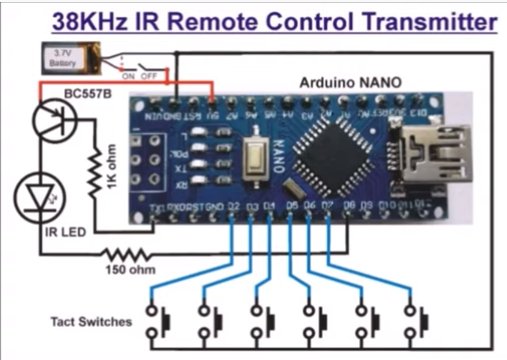
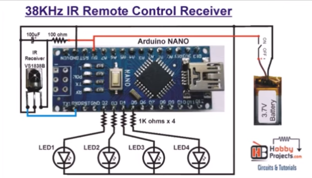

38KHz IR Remote Control Transmitter and Receiver(ref)(21:39)(YouTube)

// hobbyprojects
// 08-05-2020 38KHz_IR_Remote_Control_Transmitter.ino
#define toneOutput_pin 8
int key1 = 5; // HR-
int key2 = 4; // HR+
int key3 = 6; // MIN-
int key4 = 3; // MIN+
int key5 = 7; // SEC_RESET
int key6 = 2; // Mode
int val;
void setup()
{
pinMode(key1,INPUT_PULLUP);
pinMode(key2,INPUT_PULLUP);
pinMode(key3,INPUT_PULLUP);
pinMode(key4,INPUT_PULLUP);
pinMode(key5,INPUT_PULLUP);
pinMode(key6,INPUT_PULLUP);
Serial.begin(1200);
tone(toneOutput_pin, 38000);
}
void loop() {
val = digitalRead(key1);
while (val == LOW)
{
Serial.print("1");
delay(250);
val = digitalRead(key1);
}
val = digitalRead(key2);
while (val == LOW)
{
Serial.print("2");
delay(250);
val = digitalRead(key2);
}
val = digitalRead(key3);
while (val == LOW)
{
Serial.print("3");
delay(250);
val = digitalRead(key3);
}
val = digitalRead(key4);
while (val == LOW)
{
Serial.print("4");
delay(250);
val = digitalRead(key4);
}
val = digitalRead(key5);
if (val == LOW)
{
Serial.print("5");
delay(250);
while (val == LOW)
{
val = digitalRead(key5);
}
}
val = digitalRead(key6);
if (val == LOW)
{
Serial.print("6");
delay(250);
while (val == LOW)
{
val = digitalRead(key6);
}
}
} |

// hobbyprojects
//08-05-2020 38KHz_IR_Remote_Control_Receiver.ino
int LED1 = 2;
int LED2 = 3;
int LED3 = 4;
int LED4 = 5;
String s;
void setup()
{
Serial.setTimeout(50);
Serial.begin(1200);
pinMode(LED1,OUTPUT);
pinMode(LED2,OUTPUT);
pinMode(LED3,OUTPUT);
pinMode(LED4,OUTPUT);
}
void loop()
{
if(Serial.available())
{
s = Serial.readString();
if (s == "1")
{
digitalWrite(LED1,HIGH);
}
if (s == "2")
{
digitalWrite(LED1,LOW);
}
if (s == "3")
{
digitalWrite(LED2,HIGH);
}
if (s == "4")
{
digitalWrite(LED2,LOW);
}
if (s == "5")
{
digitalWrite(LED3, !digitalRead(LED3));
}
if (s == "6")
{
digitalWrite(LED4, !digitalRead(LED4));
}
}
} | |